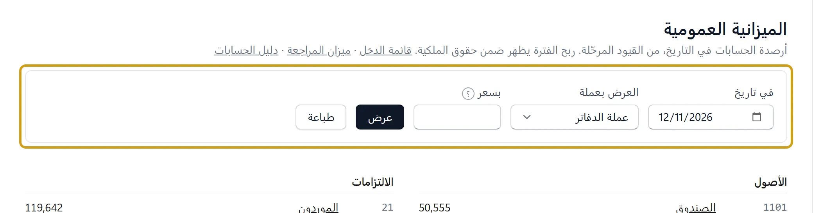
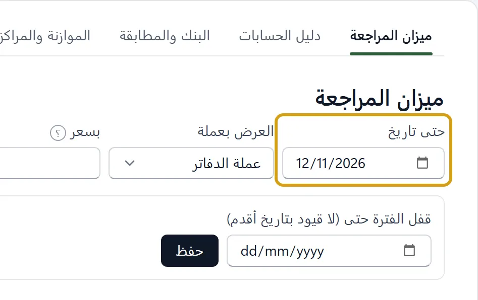
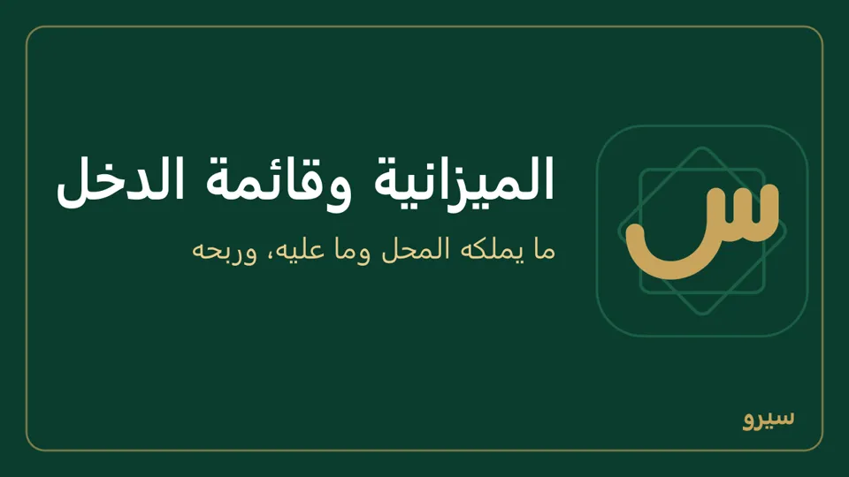

القوائم المالية: الميزانية وقائمة الدخل
من القوائم المالية في القائمة الجانبية (أو التقارير):
- الميزانية العمومية: ما تملكه الشركة (الصندوق، البنك، ديون الزبائن، البضاعة) مقابل ما عليه (الموردون، الضرائب) وحقوق المالك. اختر التاريخ واضغط عرض. الأصول تساوي الالتزامات وحقوق الملكية؛ وإن لم تتساويا يقول ذلك سطر أحمر ورابط إلى فحص الدفاتر. اضغط سطر حساب فيفتح دفتره من أول سنته حتى ذلك التاريخ. تحت «رأس المال» ما صنعه بأسطر أصغر: رأس مال مدفوع وأرصدة افتتاحية ومسحوبات شخصية (ما يعنيه). تظهر على شكل حرف T: الأصول في عمود، والالتزامات وحقوق الملكية في عمود بجانبه، على الشاشة وفي الطباعة وPDF (على الكمبيوتر والجوال). في نافذة ضيّقة أو على شاشة الجوال تنزل تحت بعضها.


- قائمة الدخل: الإيرادات ناقص تكلفة المبيعات والمصاريف في المدة التي تختارها، وفي آخرها صافي الربح أو الخسارة. اضغط سطر حساب فيفتح دفتره لهذه الأيام نفسها، فترى كل قيد صنع الرقم ومستنده. وإن كان في الربح ما لا تكلفة له يقوله سطر تحت الأرقام، ويُطبع معها: صافي الربح مو صحيح.
- مجمل الربح وصافي الربح: مجمل الربح هو المبيعات بعد المرتجعات ناقص تكلفة البضاعة المباعة، أي ربحك من البضاعة وحدها. صافي الربح هو مجمل الربح ناقص المصاريف (الإيجار، الرواتب، الكهرباء، وخصم الفواتير…) وزائد الإيرادات الأخرى، أي ما بقي لك فعلاً. مثال: بعت بـ 1,000 بضاعة كلفتها 700 ودفعت مصاريف 200: مجمل الربح 300 وصافي الربح 100. وبضاعة سجّلتها بمبلغ بلا أصناف (اشتريت ← بضاعة للبيع) لها في قائمة الدخل سطرها «بضاعة مشتراة بالمبلغ»: تنقص صافي الربح ولا تمسّ مجمل الربح (ما يعنيه). الاثنان في الرئيسية والتقارير ← الفروع، وصافي الربح في آخر قائمة الدخل.
- المتاجرة والتشغيل والأرباح والخسائر: لا يوزّع سيرو حسابات المصاريف على هذه الحسابات الختامية الثلاثة، ولا خانة لتحديد عائدية كل مصروف. الموجود: «تكلفة البضاعة المباعة» وحدها تدخل مجمل الربح (ما يقابل حساب المتاجرة)، وكل مصروف آخر يُطرح بعده فيخرج صافي الربح. ولكل حساب الرمز في النظام الموحد تكتبه من دليل الحسابات ليظهر في ميزان المراجعة بالنظام الموحد، وهو تسمية فقط لا تغيّر مكان المصروف في قائمة الدخل.
- ميزان المراجعة: المحاسبة، واختر حتى تاريخ لرصيد يوم معيّن. اضغط اسم حساب لترى دفتره بكل حركة ورصيدها، من أول السنة حتى ذلك التاريخ، وهذا الشهر أو الكل أو من وإلى لمدة أخرى (وفوقه رصيد أول المدة و«حركة المدة»)، ومشاركة يرسله نصاً، وطباعة أو PDF يطبعه أو يحفظه PDF باسم الشركة للمدة نفسها، ثم القيد نفسه والمستند الذي صنعه.


- لكل واحدة زر طباعة يطبعها باسم الشركة وبياناتها، أو يرسلها نصاً.

الربح لا يُرحَّل إلى حساب، فيظهر في حقوق الملكية سطرين: أرباح سنوات سابقة وربح السنة حتى التاريخ. وفي السنوات المالية يقول شرح الربح تحت ربح كل سنة ما دخله بلا تكلفة معروفة.
على الجوال: الأرباح والخسائر والميزانية العمومية (وتاريخ آخر لميزانية أي يوم) في مجموعة المال والتقارير، ولكل منهما PDF للمشاركة. المحاسبة ← ميزان المراجعة فيه الحساب ثم القيد كما على الكمبيوتر، وزر مشاركة للميزان، ولدفتر الحساب مشاركة PDF وطباعة ونص. وسطر في الأرباح والخسائر أو الميزانية العمومية يفتح دفتر حسابه للمدة نفسها.